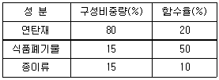
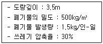

폐기물처리산업기사 (2004-09-05 기출문제)
1과목: 폐기물개론
1. 수분함량이 80％인 슬러지 100m3을 25m3으로 농축하였다면 함수율은? (단, 슬러지의 비중은 항상 1이다.)
- 15％
- 20％
- 25％
- 30％
(정답률: 알수없음)

2. 어느 도시의 쓰레기를 분류하여 다음표와 같은 결과를 얻었다. 이 쓰레기의 함수율은?

- 22％
- 24％
- 27％
- 29％
(정답률: 알수없음)
3. 인구가 200만명인 어떤 도시의 폐기물 수거실적은 1,009,940톤/년 이었다. 폐기물 수거율이 총배출량의 75%라고 하면 이 도시의 1인 1일 배출량은? (단, 1년 = 365일)
- 1.04㎏
- 1.38㎏
- 1.84㎏
- 2.42㎏
(정답률: 알수없음)
4. 400세대 2000명이 생활하는 아파트에서 배출하는 쓰레기를 4일마다 수거하는데 적재용량 8.0m3짜리 트럭 6대가 소요된다. 쓰레기의 용적당 중량은 400kg/m3라면 1인당 1일 쓰레기 배출량은 얼마인가?
- 1.2kg
- 1.8kg
- 2.1kg
- 2.4kg
(정답률: 알수없음)
5. 고로슬래그의 입도분석 결과 입도누적 곡선상의 10％, 60％ 입경이 각각 0.5mm, 1.0mm 였다면 유효입경은?
- 0.1mm
- 0.5mm
- 1.0mm
- 2.0mm
(정답률: 알수없음)
6. 파쇄기에 관한 설명으로 틀린 것은?
- 충격파쇄기는 유리나 목질류 등을 파쇄하는데 이용된다.
- 충격파쇄기는 대개 왕복식이다.
- 전단파쇄기는 충격파쇄기에 비해 파쇄속도가 느리다.
- 전단파쇄기는 충격파쇄기에 비해 이물질의 혼입에 약하다.
(정답률: 알수없음)
7. CH3OH 이 혐기성반응으로 완전히 가스화 되었다. 발생한 CH4의 양이 350mL 였다면 투입한 CH3OH의 양(g)은? (단, 최종생성물은 메탄, 이산화탄소, 물이다)
- 0.86
- 0.77
- 0.67
- 0.56
(정답률: 알수없음)
8. 쓰레기발생량에 영향을 주는 인자에 관한 설명으로 가장 거리가 먼 것은?
- 쓰레기통이 클수록 쓰레기 발생량이 증가한다.
- 수집빈도가 낮을수록 쓰레기 발생량이 증가한다.
- 생활수준이 증가되면 쓰레기 발생량이 증가한다.
- 도시규모가 커질수록 쓰레기 발생량이 증가한다.
(정답률: 알수없음)
9. 폐기물 성분 중 비가연성이 66%(무게기준)를 차지하고 있다. 밀도가 550㎏/m3인 폐기물이 6m3있을 때 가연성 물질의 양(㎏)은?
- 922
- 1,022
- 1,122
- 1,322
(정답률: 알수없음)
10. 함수율 80%인 슬러지 1㎏을 농축하여 함수율이 50%로 되었다. 이때 제거된 수분양은 얼마(㎏)인가? (단, 슬러지 비중은 1.0 이라 가정한다)
- 0.4
- 0.5
- 0.6
- 0.7
(정답률: 알수없음)
11. 폐기물 발열량을 H, 불완전 연소에 의한 열손실을 Q, 연소후 재의 열손실을 R이라 할 때 연소 효율E(%)는?
- E(%) = ((H+Q+R)/H) × 100
- E(%) = (H/(H+Q+R)) × 100
- E(%) = ((H-Q-R)/H) × 100
- E(%) = (H/(H-Q-R)) × 100
(정답률: 알수없음)
12. 쓰레기 관리 체계에서 비용이 가장 많이 드는 것은?
- 수거
- 처리
- 저장
- 퇴비화
(정답률: 알수없음)
13. 쓰레기의 물리적 성상을 분석하기 위한 절차의 순서로 가장 알맞는 것은?
- 시료-전처리-분류-건조-밀도측정-발열량 측정
- 시료-전처리-건조-분류-밀도측정-발열량 측정
- 시료-밀도측정-분류-건조-전처리-발열량 측정
- 시료-밀도측정-건조-분류-전처리-발열량 측정
(정답률: 알수없음)
14. 쓰레기 발생량에 영향을 주는 모든 인자를 시간에 대한 함수로 나타낸 후, 시간에 대한 함수로 표현된 각 영향인자들간의 상관관계를 수식화하는 쓰레기 발생량 예측방법은?
- 시간인지회귀모델
- 다중회귀모델
- 정적모사모델
- 동적모사모델
(정답률: 알수없음)
15. 쓰레기 압축을 위한 장치는 압력의 강도에 의해 분류할 수 있다. 저압력 압축기의 기준으로 알맞는 것은?
- 5기압 이하
- 7기압 이하
- 10기압 이하
- 12기압 이하
(정답률: 알수없음)
16. 쓰레기 발생량 조사방법과 가장 거리가 먼 것은?
- 물질수지법
- 경향법
- 적재차량 계수분석
- 직접계근법
(정답률: 알수없음)
17. 폐기물량이 2000m3이고 그 밀도가 350kg/m3이다. 8톤(적재가능톤수)의 트럭으로 이를 수송하려면 몇 대의 트럭이 필요한가? (단, 예비용의 대기차량은 2대을 포함한다.)
- 88대
- 89대
- 90대
- 91대
(정답률: 알수없음)
18. 쓰레기를 100톤 소각하였을 때 남은 재의 중량이 20%였다. 재의 용적이 20m3이라면 재의 밀도는?
- 1,000kg/m3
- 1,500kg/m3
- 2,000kg/m3
- 2,500kg/m3
(정답률: 알수없음)
19. 어떤 도시쓰레기의 발생량이 0.8kg/인·일 이라고 한다. 이 쓰레기의 밀도가 0.4ton/m3 라고 할 때 차량적재용량이 4.5m3/대이라면 일일 적재 가능한 인구의 수는?
- 1,250명/대
- 2,250명/대
- 2,350명/대
- 2,450명/대
(정답률: 알수없음)
20. 함수율 80% 인 폐기물 10톤을 건조시켜 함수율 30%로 만들 경우 폐기물의 중량(ton)은 얼마로 감소하는가? (단, 비중은 1.0 )
- 2.6
- 2.9
- 3.2
- 3.5
(정답률: 알수없음)
2과목: 폐기물처리기술
21. 유기물의 산화공법으로 적용되는 Fenton 산화반응에 사용되는 것으로 가장 적절한 것은?
- 3가 철이온과 자외선
- 황산 제1철과 자외선
- 2가 철이온과 과산화수소
- 황산 제2철과 과산화수소
(정답률: 알수없음)
22. 열교환기중 연도에 설치하여 보일러 전열면을 통과한 연소가스의 여열로 보일러 급수를 예열하여 보일러의 효율을 높이는 장치는?
- 과열기
- 재열기
- 절탄기
- 공기예열기
(정답률: 알수없음)
23. 시멘트 고형화법중 시멘트 기초법에 관한 설명으로 틀린 것은?
- 포틀랜드 시멘트를 사용한다.
- 폐기물의 건조 또는 탈수가 필요하다.
- 낮은 pH에서 폐기물 성분의 용출 가능성이 크다.
- 고농도의 중금속 폐기물처리에 적합하다.
(정답률: 알수없음)
24. 분뇨처리장 설계시 1인당 분뇨 배출량은 얼마로 추정하고 있는가?
- 0.5ℓ/인.일
- 1.1ℓ/인.일
- 2.4ℓ/인.일
- 3.2ℓ/인.일
(정답률: 알수없음)
25. 매립지내에서 생성되는 가스와 관계가 가장 먼 것은?
- CH4
- CO2
- H2S
- SO2
(정답률: 알수없음)
26. 석탄의 탄화도가 증가하면 증가되는 것은?
- 휘발분
- 비열
- 매연발생율
- 착화온도
(정답률: 알수없음)
27. 점토가 매립지에서 차수막으로 적합하기 위한 액성한계 기준으로 가장 적절한 것은?
- 20% 이하
- 30% 이하
- 20% 이상
- 30% 이상
(정답률: 알수없음)
28. 무기성 고형화와 비교한 유기성 고형화에 관한 설명으로 틀린 것은?
- 수밀성이 매우 크며 다양한 폐기물에 적용 가능함
- 최종 고화체의 체적 증가가 다양함
- 상업화된 처리법의 현장자료가 다양함
- 고도의 기술이 필요하며 촉매, 촉진제 등에 유해물질이 사용됨
(정답률: 알수없음)
29. 인구가 100,000명인 도시에서 발생한 폐기물을 압축하여 도랑식 위생매립방법으로 처리하고자 한다. 1년동안 매립에 필요한 매립지의 부지면적은?

- 32800m2
- 21900m2
- 18400m2
- 14400m2
(정답률: 알수없음)
30. 희석분뇨량 2,000m3/일, BOD 240mg/ℓ 포기조의 부하량 0.4 BODkg/m3· 일, 포기조 포기량 1.5m3/시· m3이다. 폭기조의 산기관수는? (단, 개당 산기관의 용량 120ℓ /분이다.)
- 150개
- 250개
- 350개
- 450개
(정답률: 알수없음)
31. 슬러지내의 물 형태중 고형물질과 직접 결합해 있지 않기 때문에 농축 등의 방법으로 용이하게 분리할 수 있는 것은?
- 모관결합수
- 내부수
- 간극수
- 부착수
(정답률: 알수없음)
32. 탄소를 85%, 수소를 13%, 황 2%를 함유하는 중유의 연소에 필요한 이론산소량은?
- 약 11.1 Sm3/kg
- 약 8.6 Sm3/kg
- 약 5.6 Sm3/kg
- 약 2.3 Sm3/kg
(정답률: 알수없음)
33. 소화조로 투입되는 분뇨중 휘발성고형물의 양이 9000kg/day이다. 이 분뇨의 휘발성 고형물은 전체고형물의 2/3를 차지하고 분뇨는 5%의 고형물을 함유한다면 소화조로 투입되는 분뇨의 양은? (단, 분뇨의 비중은 1로 본다.)
- 270m3/day
- 220m3/day
- 185m3/day
- 135m3/day
(정답률: 알수없음)
34. 토양의 현장처리기법인 토양세척법과 관련된 주요인자와 가장 거리가 먼 것은?
- 헨리상수
- 지하수 차단벽의 유무
- 투수계수
- 분배계수
(정답률: 알수없음)
35. 일반적으로 매립장 침출수 발생에 절대적인 영향을 미치는 인자는?
- 매립된 쓰레기 자체수분
- 지하수의 유입
- 쓰레기 분해시의 발생되는 수분
- 표토를 침투하는 강수
(정답률: 알수없음)
36. 다음 차수막공법 중 연직차수막에 해당되지 않는 것은?
- 강널말뚝
- 어스라이닝
- Grout공법
- 어스댐의 코아
(정답률: 알수없음)
37. 폐기물의 연소능력이 250kg/m2-hr이며 연소할 폐기물의 양이 200m3/day 이다. 1일 6시간 소각로를 가동시킨다고 할 때 로스톨의 면적은? (단, 폐기물의 밀도는 150kg/m3 임.)
- 15m2
- 20m2
- 25m2
- 30m2
(정답률: 알수없음)
38. 어떤 분뇨처리장으로 VS가 1.4g/ℓ 인 분뇨가 20㎘/일 유입될 때 소화조에서 발생되는 총 CH4 가스양은? (단, 1단계 소화조 및 2단계 소화조에서의 VS 제거율은 각각 55%, 20%이고 CH4 가스 생산량은 각각 1m3/㎏-VS제거, 0.5m3/㎏-VS 제거이다.)
- 약 12m3/일
- 약 17m3/일
- 약 25m3/일
- 약 29m3/일
(정답률: 알수없음)
39. 합성차수막인 PVC의 장단점을 설명한 내용과 가장 거리가 먼 것은?
- 작업이 용이하다.
- 접합이 용이하다.
- 자외선, 오존에 강하다.
- 유기화학물질에 약하다.
(정답률: 알수없음)
40. 매립된지 5년이 넘지 않은 매립지에서 발생되는 침출수를 처리하기 위한 공정으로 가장 효율성이 높으면서 경제적인 것은? (단, 침출수 특성 : COD/TOC ＞2.8, BOD/COD ＞0.5 )
- 생물학적처리
- 화학적처리
- 활성탄처리
- 역삼투
(정답률: 알수없음)
3과목: 폐기물 공정시험 기준(방법)
41. 마이크로파에 의한 유기물분해에 관한 설명으로 알맞지 않은 것은?
- 산과 함께 시료를 용기에 넣고 마이크로파를 가한다.
- 재현성이 좋다.
- 가열속도가 빠르다.
- 유기물함량이 비교적 낮은 시료에 이용된다.
(정답률: 알수없음)
42. 원자흡광광도법에서 정량법에 의한 검량선의 작성방법과 가장 거리가 먼 것은?
- 검량선법
- 내부표준법
- 표준첨가법
- 넓이 백분율법
(정답률: 알수없음)
43. 흡광광도 측정시 입사광의 강도에 대한 투과광의 강도가 50%이었다면 흡광도는 얼마인가?
- 0.1
- 0.3
- 0.5
- 0.8
(정답률: 알수없음)
44. 유기물 함량이 비교적 높지 않고 금속의 수산화물, 산화물, 인산염 및 황화물을 함유하는 시료에 적용되는 시료의 전처리 방법은?
- 질산-황산에 의한 분해
- 질산-염산에 의한 분해
- 질산-과염소산에 의한 분해
- 질산-불화수소산에 의한 분해
(정답률: 알수없음)
45. 크롬(Cr)을 원자흡광광도법(공기-아세틸렌불꽃)으로 시험하는 과정에서 철, 니켈등의 공존물질에 의한 방해요인이 크므로 어떤 시약을 넣어 측정하는가?
- 수산나트륨
- 인산나트륨
- 황산나트륨
- 치오황산나트륨
(정답률: 알수없음)
46. 원자흡광광도법으로 수은을 측정할 때 시료내 벤젠, 아세톤 등 휘발성유기물질이 있는 경우, 이에 대한 영향을 방지하기 위한 조치방법으로 가장 적절한 것은?
- 질산 분해후 헥산으로 이들 물질을 추출분리
- 염화제일주석산 분해후 헥산으로 이들 물질을 추출분리
- 과황산칼륨 분해후 헥산으로 이들 물질을 추출분리
- 과망간산칼륨 분해후 헥산으로 이들 물질을 추출분리
(정답률: 알수없음)
47. 시료용기에 관한 설명으로 알맞지 않은 것은?
- 노말헥산 추출물질, 유기인 시험을 위한 시료 채취시는 무색경질유리병을 사용한다.
- PCB 및 휘발성저급염소화탄화수소류 시험을 위한 시료 채취시는 무색경질유리병을 사용한다.
- 채취용기는 기밀하고 누수나 흡습성이 없어야 한다.
- 시료의 부패를 막기위해 공기가 통할 수 있는 코르크마개를 사용한다.
(정답률: 알수없음)
48. 용출장치에서 사용되는 진탕기의 진탕횟수로 적절한 것은?
- 매분당 약 60회
- 매분당 약 120회
- 매분당 약 200회
- 매분당 약 300회
(정답률: 알수없음)
49. 이온전극법에서 적용되는 이온전극중 격막형 전극으로 측정하지 않는 이온은?
- NH4+
- K+
- CN-
- NO2-
(정답률: 알수없음)
50. 대상폐기물의 양이 500톤 이상 1000톤 미만 일 때 시료의 최소 수는?
- 14
- 25
- 36
- 45
(정답률: 알수없음)
51. 6가 크롬을 원자흡광광도법에 따라 정량할 때 표준편차율 범위로 가장 알맞는 것은?
- 1∼5%
- 1∼8%
- 2∼10%
- 5∼15%
(정답률: 알수없음)
52. 폐기물공정시험 방법의 총칙에서 규정하고 있는 사항 중 옳은 것은?
- '정확히 단다'라 함은 규정된 양의 검체를 취하여 0.3mg까지 다는 것을 말한다.
- '약'이라 함은 기재된 양에 대하여 ± 5% 이상의 차가 있어서는 안된다.
- '정확히 취하여'라 함은 규정된 양의 검체 또는 시액을 피펫으로 눈금까지 취하는 것을 말한다.
- 시험에 사용하는 물은 따로 규정이 없는 한 탈염수 또는 정제수를 말한다.
(정답률: 알수없음)
53. 원자흡광도 분석에서 일반적으로 나눌 수 있는 간섭의 종류와 가장 거리가 먼 것은?
- 물리적 간섭
- 이온화 간섭
- 화학적 간섭
- 분광학적 간섭
(정답률: 알수없음)
54. 가스크로마토그래피의 검출기 중 인 또는 유황화합물을 선택적으로 검출할 수 있는 것은?
- 불꽃광형 검출기
- 알칼리열이온화 검출기
- 수소염이온화 검출기
- 전자포획형 검출기
(정답률: 알수없음)
55. 폐기물의 수분을 측정하기 위한 건조 온도 및 시간으로 가장 정확한 것은?
- 100∼1⑤℃, 2시간
- 100∼1⑤℃, 4시간
- 1⑤∼110℃, 2시간
- 1⑤∼110℃, 4시간
(정답률: 알수없음)
56. 시료의 전처리방법 중 회화에 의한 유기물분해시 회화로의 적정 온도범위는?
- 300 ~ 400℃
- 400 ~ 500℃
- 500 ~ 600℃
- 600 ~ 700℃
(정답률: 알수없음)
57. 폐기물공정시험방법 중 용출시험을 위한 시료액의 조제방법으로 틀린 것은?
- 용매의 pH는 4.5 ~ 5.8으로 조절한다.
- 용매의 pH를 조절하기 위해 염산을 사용한다.
- 시료와 용매의 비율은 1 : 10(W : V)으로 한다.
- 조제한 시료 100g 이상을 정밀히 달아 시료로 사용한다.
(정답률: 알수없음)
58. 시료를 조제하기 위한 시료의 전처리 중 소각잔재, 오니 또는 입자상물질의 전처리방법으로 맞는 것은?
- 폐기물 입경을 분쇄하여 10mm 이하로 한다.
- 폐기물 입경이 10mm 이상인 것은 분쇄하여 5 ~ 10mm로 한다.
- 전처리 과정이 필요 없다.
- 작은 돌맹이등의 이물질을 제거한다.
(정답률: 알수없음)
59. 다음 총칙에 관한 용어 설명 중 잘못된 것은?
- 하나 이상의 시험방법으로 시험한 결과가 서로 달라 제반 기준의 적부 판정에 영향을 줄 경우에는 산술 평균에 의하여 결정한다.
- 유효측정농도는 지정된 시험방법에 따라 시험하였을 경우 그 시험방법에 대한 최소 정량한계를 의미하며, 그 미만은 불검출된 것으로 간주한다.
- “ 정량 범위” 라 함은 이 시험방법에 따라 시험할 경우 표준 편차율 10%이하에서 측정할 수 있는 정량하한과 정량상한의 범위를 말하며, 이는 측정기기의 성능이나 조작조건에 따라 다소 변할 수 있다.
- “ 표준 편차율” 이라 함은 표준편차를 평균치로 나눈 값의 백분율로서 반복조작시의 편차를 상대적으로 표시한 것을 말한다.
(정답률: 알수없음)
60. 흡광광도법에 의한 구리를 정량시 사용할 수 있는 추출용매와 가장 거리가 먼 것은?
- 벤젠
- 에틸알코올
- 초산부틸
- 사염화탄소
(정답률: 알수없음)
4과목: 폐기물 관계 법규
61. 폐기물처리업의 업종구분과 그에 따른 영업내용으로 알맞지 않은 것은?
- 폐기물중간처리업 : 폐기물중간처리시설을 갖추고 폐기물을 소각,중화,파쇄,고형화등의 방법에 의하여 중간처리(생활폐기물을 재활용하는 경우 제외)하는 영업
- 폐기물최종처리업 : 폐기물최종처리시설을 갖추고 폐기물을 매립,해역배출등의 방법에 의하여 최종처리하는 영업
- 폐기물수집, 운반업 : 폐기물을 수집하여 처리장소로 운반하는 영업
- 폐기물종합처리업 : 폐기물처리시설을 갖추고 폐기물을 중간처리 및 최종처리를 함께 하는 영업
(정답률: 알수없음)
62. 지정폐기물 종류에 관한 설명으로 알맞지 않는 것은?
- 특정시설에서 발생되는 폐합성수지 : 합성수지제조업의 제조공정에서 발생되는 것에 한한다.
- 폐산 : 액체상태의 폐기물로서 수소이온농도지수가 2.0 이하인 것에 한한다.
- 폐알카리 : 액체상태의 폐기물로서 수소이온농도지수가 12.5이상인 것에 한하며 수산화칼륨 및 수산화나트륨을 포함한다.
- 폐유독물 : 환경부령이 정하는 물질 또는 이를 함유한 물질에 한한다.
(정답률: 알수없음)
63. 다음 중 폐기물관리법의 적용을 받지 않는 물질로 가장 적절한 것은?
- 동물의 사체
- 폐유
- 하수
- 폐산
(정답률: 알수없음)
64. 사후관리 이행보증금의 사전 적립대상이 되는 폐기물을 매립하는 시설의 면적 기준은?
- 3,300 m2이상
- 5,500 m2이상
- 10,000 m2이상
- 30,000 m2이상
(정답률: 알수없음)
65. 폐기물처리시설중 기계적 처리시설(중간처리시설)에 해당되는 것은?
- 시멘트 소성로
- 고형화시설
- 열처리조합시설
- 연료화시설
(정답률: 알수없음)
66. 폐기물처리업의 변경신고를 하여야 할 사항과 가장 거리가 먼 것은?
- 상호의 변경
- 연락장소 또는 사무실 소재지의 변경
- 임시차량의 증차 또는 운반차량의 감차
- 처리용량 누계의 100분의 30 이상의 변경
(정답률: 알수없음)
67. 환경부장관이 국가폐기물관리종합계획을 수립시 포함되어야 할 사항과 가장 거리가 먼 것은?
- 재원조달계획
- 종합계획실천 여건 및 전망
- 부문별 폐기물관리정책
- 종전의 종합계획에 대한 평가
(정답률: 알수없음)
68. 폐기물법상 영업정지에 갈음하여 부과할 수 있는 과징금의 최고 액수는?
- 3억원
- 2억원
- 1억원
- 5천만원
(정답률: 알수없음)
69. 폐기물처리시설 중 멸균분쇄시설의 검사기관으로 적절치 않는 것은?
- 환경관리공단
- 시,도 보건환경연구원
- 한국건설기술연구원
- 산업기술시험원
(정답률: 알수없음)
70. 지정폐기물을 시멘트로 고형화하는 경우 시멘트의 양의 기준으로 가장 적절한 것은?
- 50 ㎏/m3 이상
- 100 ㎏/m3 이상
- 150 ㎏/m3 이상
- 200 ㎏/m3 이상
(정답률: 알수없음)
71. 폐기물 매립시설이 사용종료되거나 폐쇄된후 침출수등의 누출 등으로 환경에 중대한 위해가 올 우려가 있다고 인정되는 경우에는 당해 토지의 이용을 제한할 수 있다. 이때 그 토지이용을 제한 할 수 있는 기간을 알맞게 나타낸 것은?
- 폐쇄된 날로부터 15년이내
- 폐쇄된 날로부터 20년이내
- 폐쇄된 날로부터 25년이내
- 폐쇄된 날로부터 30년이내
(정답률: 알수없음)
72. 음식물류폐기물 처리시설의 기술관리인의 자격으로 적절치 않는 것은?
- 식품공학기사
- 토목산업기사
- 기계기사
- 전기기사
(정답률: 알수없음)
73. 시간당 처리능력이 200킬로그램이상 2톤미만인 소각시설의 경우 다이옥신의 측정주기기준으로 적절한 것은?
- 12월에 1회 이상
- 6월에 1회 이상
- 3월에 1회 이상
- 1월에 1회 이상
(정답률: 알수없음)
74. 대통령령이 정하는 폐기물처리시설을 설치, 운영하는 자는 당해 폐기물처리시설의 설치, 운영으로 인하여 주변 지역에 미치는 영향을 몇 년마다 조사하여야 하는가?
- 10년
- 5년
- 3년
- 2년
(정답률: 알수없음)
75. 지정폐기물 종류중 유해물질함유 폐기물(환경부령이 정하는 물질을 함유한 것에 한한다)인 분진에 관한 설명으로 알맞는 것은?
- 대기오염방지시설에서 포집된 것에 한하되, 소각시설에서 발생되는 것을 제외한다.
- 대기오염배출시설 및 소각시설에서 발생되는 것에 한한다.
- 소각시설에서 발생되는 것에 한하며 그 외의 대기오염방지시설에서 포집된 것은 제외한다.
- 대기오염배출시설 및 소각시설에서 발생되는 것은 제외한다.
(정답률: 알수없음)
76. 폐기물처리업자 또는 폐기물재활용신고자가 휴업· 폐업 또는 재개업을 한 때에는 이에 대한 신고서를 제출하여야 한다. 기한이 맞는 것은?
- 휴업, 폐업 또는 재개업을 한 날부터 7일 이내
- 휴업, 폐업 또는 재개업을 한 날부터 10일 이내
- 휴업, 폐업 또는 재개업을 한 날부터 20일 이내
- 휴업, 폐업 또는 재개업을 한 날부터 30일 이내
(정답률: 알수없음)
77. 사업장폐기물처리업자가 일정기간 조업을 중단한 경우에는 보관중인 폐기물에 대하여 처리를 명하게 된다. 동물성잔재물 및 감염성폐기물중 조직물류등 부패 변질의 우려가 있는 폐기물의 경우 처리명령대상이 되는 조업중단기간은?
- 30일
- 15일
- 10일
- 3일
(정답률: 알수없음)
78. 변경허가를 받지 아니하고 폐기물처리시설의 허가사항을 변경한 자에 대한 행정처분으로 가장 적절한 것은?
- 1년이하의 징역 또는 5백만원이하의 벌금
- 2년이하의 징역 또는 1천만원이하의 벌금
- 2년이하의 징역 또는 1천5백만원이하의 벌금
- 3년이하의 징역 또는 2천만원이하의 벌금
(정답률: 알수없음)
79. 폐기물처리담당자 등이 이수하여야 할 교육과정이 아닌 것은?
- 사업장폐기물배출자과정
- 폐기물처리업기술요원과정
- 폐기물재활용신고자과정
- 폐기물처리업자과정
(정답률: 알수없음)
80. 폐기물 관리법상 용어의 정의로 틀린 것은?
- '생활폐기물'이라 함은 사업장폐기물외의 폐기물을 말한다.
- '지정폐기물'이라 함은 사업장폐기물중 폐유·폐산 등 주변환경을 오염시킬 수 있거나 감염성폐기물 등 인체에 위해를 줄 수 있는 유해한 물질로서 대통령령이 정하는 폐기물을 말한다.
- '처리'라 함은 폐기물의 소각, 중화, 파쇄, 고형화 등에 의한 중간처리(재활용제외)와 매립등에 의한 최종처리(해역배출제외)를 말한다.
- '폐기물 처리시설'이라 함은 폐기물의 중간처리시설과 최종처리시설로서 대통령령이 정하는 시설을 말한다.
(정답률: 알수없음)
농축 후에는 슬러지의 양은 25m3이므로, 슬러지의 양은 25톤이다. 이 중에 수분의 양은 변하지 않으므로, 수분의 비중은 80/25 × 100% = 320%이다.
하지만, 문제에서 농축된 슬러지의 함수율을 구하는 것이므로, 수분의 비중을 제외한 고형물의 비중을 구해야 한다. 고형물의 비중은 100% - 80% = 20%이다.
따라서, 농축된 슬러지의 함수율은 20%이다.